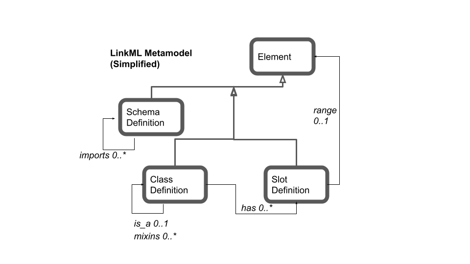

Models¶
A LinkML model describes the structure of your data. Your data can be expressed as JSON or YAML files (the default form for LinkML), or as CSVs, or as a relational database, or even a triplestore or graph database.
LinkML models are authored as YAML files. These files can be understood as data files that instantiate SchemaDefinitions in the LinkML metamodel.
The overall layout of a schema yaml file is roughly as follows:
id: https://example.org/my-schema
name: my_schema
<OTHER METADATA HERE>
# classes are the main organization until for data;
# all data records instantiate a class
classes:
Person:
...
Organization:
...
# data fields get their own section
slots:
name:
...
email:
...
age:
...
# optional: schema type extensions
types:
AgeType:
...
# enumerations
enums:
GenderType:
...
To illustrate we will use an example schema for modeling people and attributes about people. The full schema can be found in this repo at examples/PersonSchema
Model metadata and directives¶
A LinkML model/schema may have various pieces of metadata associated with it, for example:
id: https://w3id.org/linkml/examples/personinfo
name: personinfo
description: |-
Information about people, based on [schema.org](http://schema.org)
license: https://creativecommons.org/publicdomain/zero/1.0/
default_curi_maps:
- semweb_context
imports:
- linkml:types
prefixes:
personinfo: https://w3id.org/linkml/examples/personinfo/
linkml: https://w3id.org/linkml/
schema: http://schema.org/
rdfs: http://www.w3.org/2000/01/rdf-schema#
prov: http://www.w3.org/ns/prov#
default_prefix: personinfo
default_range: string
...
names, identifiers, and metadata
id – the unique identifier for the schema, as a IRI
name – the schema name. Use only alphanumeric characters, underscores, and dashes
description – a summary of the schema. Can include markdown formatting
license – CC0 recommended
modules
prefix management
prefixes – A map of prefixes. See prefixes
default_prefixes – The prefix used for all elements in this schema
default_curi_maps – prefix maps from prefixcommons
other
default_range – The default range for all slots
See also uris-and-mappings
Classes¶
Classes provide templates for organizing data. Data objects should instantiate classes in the schema. Each class has a set of slots (aka fields, attributes) that are applicable to it.
Classes operate in a very similar way to classes in a programming language like Python or Java. They are analogous to tables in relational databases.
Classes are defined in a classes block at the top level of your YAML, where the key is the class name:
classes:
Person:
is_a: NamedThing
description: >-
A person (alive, dead, undead, or fictional).
class_uri: schema:Person
mixins:
- HasAliases
slots:
- primary_email
- birth_date
- age_in_years
- gender
- has_employment_history
- has_familial_relationships
- has_medical_history
See ClassDefinition for a full list of allowed slots
Note: class names can be normal natural language noun phrases
encompassing characters such as spaces. However, when converted to
external representations, different rules will be applied, and
typically the exported name is in PascalCase. So for example, you
could call your class named thing, but the URI for the class would
be myprefix:NamedThing
Because LinkML is described in LinkML, your schema is an
instantiation of the LinkML metamodel, and schema elements have a list
of allowed slots. So for example, is_a, description, and slots
are all slots that are applicable to instances of
ClassDefinitions.
This is a little meta at first but you get used to it!
Slots¶
Slots (aka attributes, fields, columns, properties) can be associated with classes to specify what fields instances of that class can have
For example, in the schema above, instances of Person classes can have values for primary email, birthdate, etc.
In LinkML slots are “first class” and are defined independently of classes, and a slot can be used in any number of classes.
Slots are defined in a slots block at the top level of your YAML:
slots:
id:
identifier: true
slot_uri: schema:identifier
name:
slot_uri: schema:name
gender:
slot_uri: schema:gender
range: gender_enum
age_in_years:
range: integer
minimum_value: 0
maximum_value: 999
has_employment_history:
range: EmploymentEvent
multivalued: true
inlined_as_list: true
current_address:
range: Address
You can then re-use these in your class definitions. For example, if your Person class has a name slot, just list it:
classes:
Person:
...
slots:
- ...
- name
- ...
Note that LinkML models are “closed” by default. If a slot is not listed for a class, then data that includes an unlisted slot will be invalid.
Slots are inherited, so for example if name is listed
as an allowed slot for NamedThing, and Person inherits from
NamedThing, then name will be valid for Person. There is no need to
re-declare
See SlotDefinition for a full list of which metamodel slots can be applied to slots.
The Attribute slot¶
As a convenience feature, you can specify slot definitions directly within a class using the attributes slot:
classes:
Person:
is_a: NamedThing
description: >-
A person (alive, dead, undead, or fictional).
class_uri: schema:Person
mixins:
- HasAliases
attributes:
gender:
slot_uri: schema:gender
range: gender_enum
age_in_years:
range: integer
minimum_value: 0
maximum_value: 999
See also:
Types¶
See TypeDefinition in the metamodel.
Types in LinkML are scalar data values such as strings, integers, floats, and so on. LinkML comes with its own set of types, and these can be extended.
For example, you may represent chemical formulae as strings in your model, but if you provide an explicit type that maps to string, it makes the intended meaning clearer, and different applications can operate on these differently:
chemical formula value:
uri: xsd:string
base: str
description: A chemical formula
Enums¶
The core enumeration model is the same as for familiar systems, where there is a set of allowed string values:
enums:
FamilialRelationshipType:
permissible_values:
SIBLING_OF:
PARENT_OF:
CHILD_OF:
You can also make your enums into a ticher controlled vocabulary, with definitions built in:
enums:
FamilialRelationshipType:
permissible_values:
SIBLING OF:
description: A family relationship where the two members have a parent on common
PARENT OF:
description: A family relationship between offspring and their parent
CHILD OF:
description: inverse of the PARENT_OF relationship
(note you can include spaces in your enums if you like)
LinkML goes beyond most frameworks and allows your enums to be backed by external ontologies. For example, this enum is backed by GSSO
prefixes:
GGSO: http://purl.obolibrary.org/obo/GSSO_
enums:
GenderType:
permissible_values:
nonbinary man:
meaning: GSSO:009254
nonbinary woman:
meaning: GSSO:009253
transgender woman:
meaning: GSSO:000384
transgender man:
meaning: GSSO:000372
cisgender man:
meaning: GSSO:000371
cisgender woman:
meaning: GSSO:000385
Subsets¶
Elements of a schema can be partitioned into named subsets. These have no semantic meaning, but they can be useful for tagging parts of a schema for different purposes.
Metamodel¶
The LinkML metamodel describes LinkML itself. All LinkML schemas instantiate the subsets class in the metamodel, and all elements of a schema instantiate other metamodel classes.
All metamodel elements are in the https://w3id.org/linkml/ namespace, e.g:
